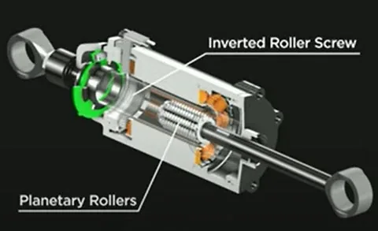

Tuopu — Profile
Tesla's integrated actuator supplier and its 300k-set capacity.
About 14 lead screws make up roughly 19% of a humanoid's cost — the single priciest part. Here is who in China is breaking Europe's grip on planetary roller screws.

A humanoid robot carries about 14 lead screws, worth roughly 19% of its total cost — making this humble-looking component the priciest in the machine. For years the market belonged to European makers like Switzerland's GSA and Germany's Schaeffler. Now Chinese suppliers are pushing into the "1-to-10" stage of mass production.
A planetary roller screw converts rotation into precise linear motion — the thigh, knee and arm joints of a humanoid. Making one requires exotic materials (42CrMo alloy steel, GCr15 bearing steel), precision grinding and thread-rolling that few factories can do. A premium unit can sell for 10,000+ RMB (~$1,400). The pain point is scale: as humanoids approach the million-unit era, screws are forecast to drive over 60% of market growth by 2030.
| Company | Nanjing Tech Equipment (南京工艺) | Best Precision (贝斯特) | Wuzhou Xinchun (五洲新春) |
|---|---|---|---|
| Edge | #1 domestic share (~8%), G3 lead accuracy, supplies Unitree | Owns German KISSLING tech; ~45% of Unitree's ball screws | Only domestic maker of reverse PRS; life >5M cycles |
| 2026 signal | P1-class batch production | Sample to volume in 2026 | 98k sets/year capacity on completion |
| Company | Tuopu (拓普集团) | Hengli Hydraulic (恒立液压) | Qinchuan (秦川机床) |
|---|---|---|---|
| Edge | Integrated linear/rotary actuator for Tesla Optimus (exclusive Tier-1) | Hydraulic precision + integrated actuator; ball screws in low-volume supply | Owns screw-grinding machine tools |
| 2026 signal | Ningbo 300k sets/year, Mexico online | PRS in trial production | Domestic top-3 share |
Beyond the giants, a wave of focused players is emerging: Shuanglin (双林股份) rolled out China's first reverse planetary roller screw for humanoid joints and started volume production in January 2026; Beite (北特科技) is crossing over from auto parts; Xinjian Transmission (新剑传动) has built 3.5M units of annual capacity; and Nous Robot (诺仕机器人) — backed by a ¥100M Series A — shipped the world's smallest 1.5mm planetary roller screw and 8,000N-thrust linear actuators for humanoid thighs and arms.
Domestic makers have cut prices to 1/3-1/2 of imports and lead times from 3-6 months to two weeks. Nanjing Tech, Best Precision and Qinchuan together held 31.7% of the market in 2025 (up from 22.4% in 2024), and are forecast to reach 41.2% in 2026. The same playbook as harmonic drives and RV reducers: exotic European component, now a Chinese commodity.
Tesla's integrated actuator supplier and its 300k-set capacity.
Unitree's main ball-screw supplier via German tech.
Hydraulic precision crossing into robot actuators.
Machine-tool maker driving the PRS replacement.
Company profiles, product pages and supplier analysis for China's robotics ecosystem.